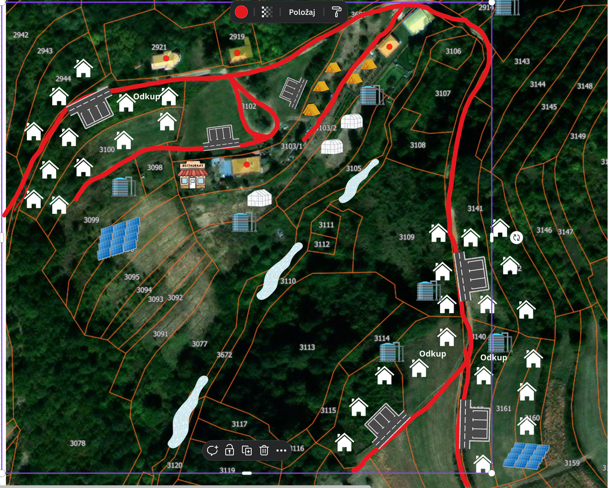
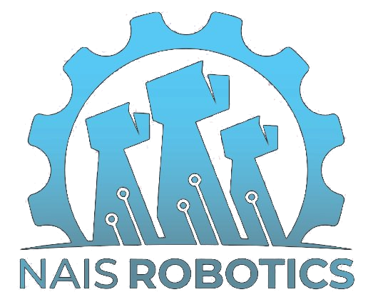
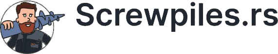

Skica imanja je urađena na osnovu već postojećih resursa i potencijalnih lokalnih partnera. Ovde vidiš kako se postojeća farma postepeno razvija u landscape-hotel sa 30 kućama, restoranom, coworking prostorom i prostorom za zadrugu.
Postojeći resursi su farma sa kućom za upravu kompleksa i ekonomski objekti na 6 hektara. Pored kuća za landscape hotel, gradi se restoran, event prostor i coworking prostor.
Skica je urađena na osnovu već postojećih resursa i potencijalnih lokalnih partnera.

Razgovor o ciljevima, detaljno predstavljanje projekta i modela saradnje.
Obilazak kuća i lokacije uživo, zatim potpisivanje ugovora koji odgovara izabranom modelu.
Izrada i postavljanje kuće, zatim rente, profit i 24/7 podrška.
Razvoj imanja oslanja se na partnerstva sa lokalnim proizvođačima i specijalizovanim firmama.


